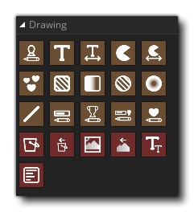

La biblioteca de acciones de dibujo es donde puede encontrar las acciones necesarias para dibujar sprites, texto o formas, así como establecer ciertas propiedades de dibujo. La mayoría de estas acciones solo se pueden usar en los diversos eventos de Draw de un objeto y es posible que no funcionen si se usan fuera del Draw Event. Las excepciones a esto son las acciones Establecer, que se pueden agregar a cualquier evento y afectarán a todos los sorteos para todas las instancias posteriores.
Es importante tener en cuenta que si agrega acciones en el Evento de Draw principal de un objeto, no dibujará el sprite que se ha asignado a la instancia a menos que explícitamente le indique a GameMaker Studio 2 que lo dibuje, usando una acción como Draw Self. Básicamente, GameMaker Studio 2 dibujará de manera predeterminada cualquier sprite asignado a una instancia, solo si no hay nada más en el Evento de Draw.
Las acciones de Draw disponibles son las siguientes: